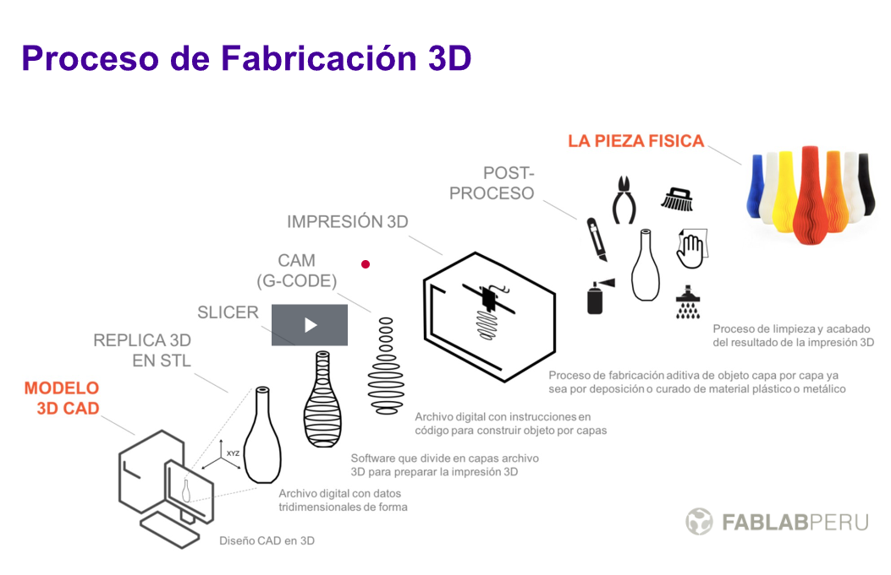

RESUMEN
Vimos un repaso de la Fabricación digital y también hemos visto diversos videos acerca de los usos de las impresiones 3D
Hemos vuelto a repasar la utilización de Tinkercad como un método de modelado 3D para crear diversas figuras y objetos
